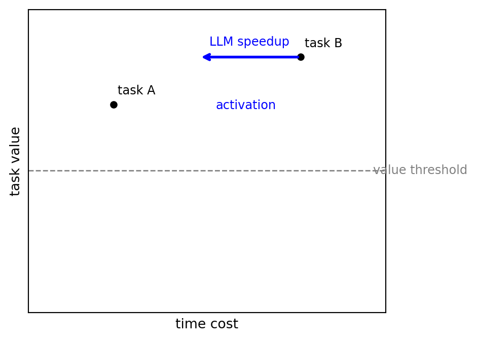

We want a productivity lift from LLM time-saving that allows for substitution: after an LLM changes which tasks are cheap in time, you reallocate time across tasks (and possibly activate tasks you previously skipped). This is a classic demand-theory problem, with time as the budget and tasks as the goods.
Estimand. Let \(p_i\) be time per unit of task-output \(i\), and let \(u(x)\) be an output index (effective work accomplished). For a unit time endowment, \[
v(p)\;=\;\max_{x\ge 0} u(x)\quad\text{s.t.}\quad \sum_i p_i x_i\le 1.
\] If an LLM yields speedups \(\beta_i\) so \(p_i' = p_i/\beta_i\), the productivity gain is \(v(p')/v(p)\).
Continuous (intensive-margin) benchmark. Under standard regularity and (especially) homotheticity, \(v(p)=1/P(p)\) where \(P(p)=e(p,1)\) is the unit time-expenditure function (a time price index). Small changes obey a Divisia/Tornqvist approximation \(\Delta\ln v\approx \sum_i s_i\,\Delta\ln\beta_i\). Large changes require integrating compensated shares (“area under Hicksian demand”). Caves, Christensen, and Diewert (1982); Hausman (1981); Willig (1976)
Discrete (extensive-margin) reality. Many tasks have setup time, are lumpy, or are “unit-demand” (you either do them or not). A particularly important empirical condition is: LLMs reduce time costs more for tasks you previously avoided (high reading/search/writing overhead). Under that condition, “AI-affected time share” is endogenous, and ex-ante shares can badly misstate the productivity lift unless you model (or measure) the extensive margin.
Practical upshot. With only a baseline share \(s_0\) on an “AI bundle” and a speedup \(\beta\), the implied gain spans a wide range (complements lower bound to substitutes upper bound). To get a point estimate you need either (i) a demand system / elasticity that maps \(s_0,\beta\mapsto v(p')/v(p)\), or (ii) experimental variation that traces out how time allocation responds as the effective AI cost changes.
Setup: time prices and speedups
Objects. Tasks \(i=1,\dots,n\), outputs \(x_i\ge 0\), time endowment normalized to \(1\), time prices \(p_i>0\) (time per unit of task output), and LLM speedups \(\beta_i>0\) so \(p_i' = p_i/\beta_i\).
We interpret \(u(x)\) as an output index or “effective work accomplished,” with time prices defining the budget: \[
\sum_i p_i x_i \le 1.
\]
Discrete extensive margin: choose which tasks to activate (unit demand or setup costs).
I treat these separately because the logic, formulas, and data requirements diverge.
Estimation cheat sheet
This section is a “lookup table” for turning measured speedups into a productivity lift \(v(p')/v(p)\) under common assumptions.
Two-good reduction (AI-affected bundle vs the rest)
For many back-of-envelope calculations, you can collapse tasks into:
good 2: the set of tasks whose time cost drops by \(\beta\) when AI is allowed,
good 1: everything else (normalized).
Let \(s_0\) be the pre-AI time share on good 2 (i.e. \(s_0 \equiv p_2 x_2 / (p_1 x_1+p_2 x_2)\) evaluated at baseline prices), and suppose only \(p_2\) changes to \(p_2' = p_2/\beta\).
Requires \(\varepsilon\) (or enough data to infer it)
Perfect substitutes
\(\beta\)
You can reallocate everything to the sped-up bundle
In the multi-task case, a common log-index approximation is the Tornqvist/Divisia form \[
\Delta\ln v \;\approx\; \sum_i \bar s_i\,\ln \beta_i,\qquad \bar s_i \equiv \tfrac12(s_i^0+s_i^1),
\] which uses average (pre/post) time shares. Caves, Christensen, and Diewert (1982)
Anthropic-style numbers as a sanity check. If \(s_0=0.10\) and \(\beta=5\) (80% time reduction when AI is used), the implied gain ranges from:
CES with \(\varepsilon=2\): \(0.9+0.1\cdot 5 = 1.4\) (40%),
substitutes bound: \(5\) (400%).
The spread here is the point: large conditional speedups do not translate to a unique aggregate lift without additional structure or data.
If you observe pre and post time shares, you can infer an elasticity (in CES)
In the same two-good CES setting, let \(s_1\) be the post-AI time share on good 2. Then \[
\operatorname{logit}(s_1)-\operatorname{logit}(s_0)=(\varepsilon-1)\ln \beta,
\] so \[
\varepsilon \;=\; 1 + \frac{\operatorname{logit}(s_1)-\operatorname{logit}(s_0)}{\ln\beta}.
\]
Here \(\operatorname{logit}(s)\equiv \ln\!\left(\frac{s}{1-s}\right)\).
This is often the cleanest way to use both pre and post shares: estimate \(\varepsilon\), then plug into the CES gain formula. (And if you do not believe CES globally, you should treat this as local-to-the-observed price change.)
Estimation flowchart (what to do with your data)
flowchart TD
A["Goal: estimate productivity lift<br/>v(p_new)/v(p_old)<br/>for fixed time endowment"] --> B{"Are tasks mostly divisible<br/>at the relevant margin?"}
B -->|Yes: continuous| C{"Are speedups small<br/>or broad-based?"}
C -->|Yes| D["Use share-weighted log changes:<br/>d ln v ~= sum_i s_i d ln beta_i<br/>(Tornqvist/Divisia)"]
C -->|No| E{"Do you have enough data to pin down substitution?<br/>e.g. CES elasticity, demand system"}
E -->|Yes| F["Compute an exact/parametric index:<br/>P(p)=e(p,1), v=1/P<br/>CES closed form when applicable"]
E -->|No| G["Trace a demand curve:<br/>vary effective AI cost/strength;<br/>estimate compensated shares; integrate"]
B -->|No: setup or unit-demand| H["Model extensive margin:<br/>which tasks get activated?"]
H --> I["Report both:<br/>(i) intensive effect on existing tasks,<br/>(ii) activation/selection effect"]
What you can estimate with what data
What you can measure
Recommended move
What you can credibly report
One big conditional speedup \(\beta\) + a baseline share \(s_0\)
Report complements/substitutes bounds; add CES sensitivity
A wide interval for \(v(p')/v(p)\) unless you assume \(\varepsilon\)
Pre and post shares \((s_0,s_1)\) for an AI bundle + a speedup \(\beta\)
Use the logit formula to estimate \(\varepsilon\); plug into CES gain
A model-based point estimate (local to the observed change)
Estimate share response vs \(\ln\beta\); integrate shares over the change
An “area under the (compensated) demand curve” estimate for large changes
Choice/activation data (tasks attempted) under multiple AI prices
Model activation thresholds / setup costs explicitly
Decomposition into intensive and extensive margins
Continuous (intensive-margin) model
Primal, dual, and the time price index
The primal problem is \[
v(p)\;=\;\max_{x\ge 0} u(x) \quad\text{s.t.}\quad \sum_i p_i x_i\le 1.
\]
Define the expenditure function \[
e(p,\bar u)=\min_{x\ge 0} \Big\{\sum_i p_i x_i: u(x)\ge \bar u\Big\}.
\]
If \(u(\cdot)\) is homothetic and degree-1 homogeneous, then \(e(p,\bar u)=\bar u\,e(p,1)\). Define the unit time price index\[
P(p)\equiv e(p,1)\quad\Rightarrow\quad v(p)=\frac{1}{P(p)}.
\]
This is the classic index-number framing applied to time prices. Caves, Christensen, and Diewert (1982)
EV/CV in time units
Let \(p^0\to p^1\) and \(u^k=v(p^k)\). Equivalent and compensating variation (measured in time) are \[
EV=e(p^0,u^1)-1,\qquad CV=e(p^1,u^0)-1.
\]
Under homotheticity, \[
EV=\frac{P(p^0)}{P(p^1)}-1,\qquad CV=\frac{P(p^1)}{P(p^0)}-1.
\]
This is the cleanest way to translate LLM time savings into a welfare measure. Hausman (1981)
Small changes (share-weighted)
Let \(t_i(p)\equiv p_i x_i^*(p)\) be optimal time shares. For small changes in time prices, \[
d\ln v\;=\;-d\ln P\;\approx\;\sum_i t_i\,d\ln \beta_i.
\]
This is the time-allocation analog of share-weighted Hulten-style approximations. Hulten (1978)
Large changes (area under compensated demand)
When LLM gains are large, constant-elasticity approximations are dangerous. Using Hicksian (compensated) shares \(s_i^H(p)\), \[
d\ln P(p)=\sum_i s_i^H(p)\,d\ln p_i.
\]
For a single changing price \(p_2\), \[
\ln\frac{P(p^1)}{P(p^0)}=\int s_2^H(p_2)\,d\ln p_2,
\]
i.e., exact welfare is the area under the compensated demand curve. Willig (1976)
CES specialization (closed-form)
For a CES aggregator \[
u(x)=\left(\sum_i \alpha_i x_i^{\frac{\sigma-1}{\sigma}}\right)^{\frac{\sigma}{\sigma-1}},\quad\sigma>0,
\]
the price index and time shares are \[
P(p)=\left(\sum_i \alpha_i^{\sigma}p_i^{1-\sigma}\right)^{\frac{1}{1-\sigma}},\qquad
t_i(p)=\frac{\alpha_i^{\sigma}p_i^{1-\sigma}}{\sum_j \alpha_j^{\sigma}p_j^{1-\sigma}}.
\]
In the two-task case, if task 2 speeds up by \(\beta\) and its ex-ante share is \(s_0\), then \[
\frac{y'}{y}=\left((1-s_0)+s_0\,\beta^{\varepsilon-1}\right)^{\frac{1}{\varepsilon-1}},\qquad \varepsilon\equiv\sigma.
\]
This is the clean continuous benchmark. Caves, Christensen, and Diewert (1982)
Proposition: two-good CES gain and share shift
Claim. In a two-good CES benchmark where only good 2 speeds up by \(\beta\) (so \(p_2'=p_2/\beta\)), the output gain and share shift can be written in terms of the ex-ante share \(s_0\):
Given CES unit-expenditure (time price) index \[
P(p)=\left(\alpha_1^{\varepsilon}p_1^{1-\varepsilon}+\alpha_2^{\varepsilon}p_2^{1-\varepsilon}\right)^{\frac{1}{1-\varepsilon}},
\qquad v(p)=\frac{1}{P(p)}.
\]
Let\(p_2' = p_2/\beta\) with \(p_1\) fixed. Then \[
\frac{v(p')}{v(p)}=\frac{P(p)}{P(p')}=
\left(
\frac{\alpha_1^{\varepsilon}p_1^{1-\varepsilon}+\alpha_2^{\varepsilon}p_2^{1-\varepsilon}}
{\alpha_1^{\varepsilon}p_1^{1-\varepsilon}+\alpha_2^{\varepsilon}(p_2/\beta)^{1-\varepsilon}}
\right)^{\frac{1}{\varepsilon-1}}.
\]
Define the ex-ante share \[
s_0\equiv\frac{\alpha_2^{\varepsilon}p_2^{1-\varepsilon}}
{\alpha_1^{\varepsilon}p_1^{1-\varepsilon}+\alpha_2^{\varepsilon}p_2^{1-\varepsilon}}.
\] Substituting into Step 2 yields the claimed gain formula.
For shares, note CES time shares satisfy \[
\frac{s}{1-s}=\frac{\alpha_2^{\varepsilon}p_2^{1-\varepsilon}}{\alpha_1^{\varepsilon}p_1^{1-\varepsilon}}.
\] Therefore, \[
\frac{s_1/(1-s_1)}{s_0/(1-s_0)}
=
\frac{(p_2')^{1-\varepsilon}}{p_2^{1-\varepsilon}}
=
\left(\frac{p_2/\beta}{p_2}\right)^{1-\varepsilon}
=
\beta^{\varepsilon-1},
\] which rearranges to the stated closed form for \(s_1\) and the logit identity.
The continuous model assumes you always do some of each task. That is wrong when tasks are lumpy, have setup costs, or are unit-demand. In those cases, LLMs can create newly affordable tasks, meaning the major effect is selection, not intensive time reallocation.
Unit-demand formulation
Let each task have payoff \(u_i\) and required time \(w_i(p)\), with decision \(q_i\in\{0,1\}\). Then \[
\max_{q\in\{0,1\}^n}\sum_i u_i q_i\quad\text{s.t.}\quad \sum_i w_i(p) q_i\le 1.
\]
Speedups change \(w_i\) by \(\beta_i\), which can turn tasks on once a threshold is crossed. This is exactly the “Cadillac tasks” phenomenon: tasks that were too time-expensive become attractive after the LLM. The usual CES elasticity is not a good summary in this regime.
One useful empirical way to think about the “tasks you previously avoided” condition is to decompose time cost into a baseline component plus an “overhead” component (search, reading, drafting, refactoring). For example, write \[
w_i=a_i+b_i,
\] and suppose AI primarily reduces overhead, \(b_i' = b_i/\beta^{O}\) while \(a_i\) is unchanged. Then \[
w_i' = a_i + \frac{b_i}{\beta^{O}},\qquad
\beta_i \equiv \frac{w_i}{w_i'} = \frac{a_i+b_i}{a_i+b_i/\beta^{O}},
\] so \(\beta_i\) is increasing in the overhead share \(b_i/(a_i+b_i)\). Tasks you previously avoided plausibly have high overhead shares, so they get larger effective speedups and are more likely to cross activation thresholds.
Setup-cost variant (bridging discrete and continuous)
Add a fixed setup time \(\phi_i\) and a continuous intensity \(x_i\): \[
\max_{q,x}\;u(x)\quad\text{s.t.}\quad \sum_i \phi_i q_i + \sum_i p_i x_i \le 1,\; x_i=0\;\text{if }q_i=0.
\]
If \(\phi_i=0\), we recover the continuous model. If \(\phi_i>0\), large LLM speedups mostly expand the active set \(\{i:q_i=1\}\), not the intensive shares.
Worked example (discrete, not continuous)
Example. Suppose you can pick one task (unit-demand). Task A yields value \(u_A=10\) and takes 1 hour. Task B yields \(u_B=12\) and takes 2 hours. Without LLMs you choose A. Now an LLM speeds up task B so it takes 1 hour. You switch to B.
Upper bound on time-equivalent gain: 1 hour (if the extra value \(u_B-u_A\) is “worth” a full hour).
Lower bound: 0 hours (if the extra value is just a small quality bump).
So the observed reallocation does not identify a precise time-savings without modeling discrete choice. This is why constant-elasticity summaries can be weak in the activation regime.
Newly activated tasks (“Cadillac tasks”)
Call a task newly activated if you would not do it at baseline prices but you do once its time cost drops. (In earlier conversations I called these “Cadillac tasks.”)
literature reviews you previously would not attempt,
custom data visualizations,
long-form proofreading or refactoring.
In a unit-demand or setup-cost model, these tasks show up as newly activated \(q_i=1\) choices, not as marginal increases in \(x_i\). That is why “AI share of time” can jump even if your underlying preferences are stable: the feasible set changed.
Applications
Application 1: from query-level time savings to an aggregate lift (Anthropic)
Anthropic (2025) estimate time savings from Claude conversations by comparing time required with vs without AI for a sample of tasks drawn from usage logs.
Suppose the headline inputs (illustrative, in the spirit of the writeup) are:
Claude is used for \(s_0=10\%\) of baseline work (measured pre-AI / from logs),
conditional time reduction is 80%, i.e. speedup \(\beta=5\) when AI is used.
Then even in the continuous two-good approximation, the implied aggregate lift depends sharply on substitution:
complements/Amdahl bound: \(+8.7\%\),
Cobb-Douglas: \(+17.4\%\),
CES with \(\varepsilon=2\): \(+40\%\).
The key empirical question is therefore not only “how big is \(\beta\) when AI is used?” but also “how does the time share respond as the relative time price changes?” (In CES that’s summarized by \(\varepsilon\); outside CES, you need the whole demand curve.)
Two concrete complications show up immediately in a log-based setting:
Endogenous task mix (extensive margin). If AI reduces time costs more for tasks you previously avoided (high search/reading/writing overhead), then the pre-AI share \(s_0\) understates the mass of tasks that become attractive post-AI.
Quality-adjusted output. Some measured “time savings” are quality improvements (or vice versa). If your output index treats quality as part of output, you need a quality measure to map time changes into \(u(x)\).
J. Becker et al. (2025) is an RCT where tasks are assigned to allow vs disallow AI tools, and the outcome is completion time (with additional self-reports and robustness checks). The striking headline in that paper is that AI access increases completion time on average in their setting.
From the demand-theory perspective:
A simple back-of-envelope translation: if allowing AI increases completion time by 19%, then the implied “speedup” is \(\beta \approx 1/1.19 \approx 0.84\) (a slowdown). Holding output constant, that’s about a 16% productivity hit on that task population.
With a fixed task set (as in many RCTs), the main object you learn is a task-level time-price change \(p_i\to p_i'\) (a \(\beta_i\) distribution), holding task composition fixed.
Translating that into an aggregate productivity index still requires an output/quality index: are we holding output constant (pure time saved), holding time constant (more output), or letting both adjust? In practice you often want “quality-adjusted output per unit time.”
If, in future settings, AI access changes which tasks are attempted, then the design has to either (i) fix tasks (to isolate intensive effects) or (ii) explicitly allow selection and measure it (to capture the extensive margin).
Experimental design (estimating substitution and selection)
Designing studies that map \(\{\beta_i\}\) into an aggregate lift \(v(p')/v(p)\) is mostly about (a) measuring substitution, and (b) separating intensive vs extensive margins.
Decide the estimand up front. “Same tasks, faster” (hold \(x\) fixed) is different from “best use of a fixed time budget” (maximize \(u(x)\)). The latter matches the substitution estimand in this note.
Run two complementary protocols.
Fixed-task protocol (intensive margin): randomize AI availability within a pre-specified task list; measure time and quality on each task.
Time-budget protocol (substitution/selection): give participants a fixed time budget and a menu (or open-ended objective); randomize AI availability; measure the output index achieved under each condition.
Measure quality explicitly. Use blinded human evaluation, unit tests, or objective metrics; pre-register how quality enters \(u(x)\) (e.g. threshold vs continuous scoring).
Trace a demand curve by varying effective AI “price.” Randomize not only “AI allowed,” but the effective cost of using AI (token budgets, latency, model quality tiers, usage quotas). This gives variation to estimate how shares move with relative time prices (the object behind \(\varepsilon\) or, more generally, Hicksian shares).
Handle learning and spillovers. Use cross-over designs, washout periods, or between-subject randomization where appropriate; measure experience and allow for dynamic treatment effects.
Diagrams
Threshold diagram (discrete activation)

Discrete activation: speedups switch on tasks
Checklist for the desiderata
Bibliography validity: citations are included and checked against ai.bib. See the validation checklist at the top.
Citation faithfulness: the optional LLM-assisted check flags suspicious claim-to-citation mismatches (also in the checklist).
Proofs: proofs are structured, collapsed by default, and include numbered steps plus a QED marker.
Cheat sheet: includes a two-good benchmark table and an estimation flowchart.
Legible diagrams: Mermaid estimation flowchart + a discrete activation figure.
Applications: explicit discussion of Anthropic time-savings and METR uplift-style RCTs.
Experimental design: concrete protocol suggestions for estimating substitution and selection.
Related literature (more explicit)
This note touches several literatures that are often cited separately. Here is a reading map that matches the objects used above (price indices, time allocation, discrete activation, and empirical measurement).
Index numbers and exact welfare from price changes (continuous case)
“True” cost-of-living index and the expenditure function. Konus defines the cost-of-living index as the ratio of minimum expenditures needed to reach a fixed utility level at two price vectors. This is exactly the object \(P(p)=e(p,1)\) (with time prices instead of money prices) that makes \(v(p)=1/P(p)\) under homotheticity. Konus (1939)
Exact/superlative indices and share-weighted approximations. Diewert formalizes when standard indices (including Tornqvist/Divisia-type log-share formulas) are “exact” for flexible demand/production forms, and motivates using share-weighted log changes as a local approximation. Diewert (1976)
Productivity measurement via index numbers. Caves-Christensen-Diewert is a central reference for exact index-number measurement of input, output, and productivity and for the duality-based framing used in the continuous model here. Caves, Christensen, and Diewert (1982)
Exact welfare for large changes. Willig and Hausman connect equivalent/compensating variation and consumer surplus to integrals of compensated demand, clarifying why large AI shocks call for “area under Hicksian demand” rather than constant-elasticity shortcuts. Willig (1976); Hausman (1981)
Estimating demand systems. Deaton-Muellbauer’s AIDS is a workhorse integrable demand system used to estimate (Marshallian/Hicksian) demand and welfare effects of price changes in practice. Deaton and Muellbauer (1980)
Time allocation, information costs, and “overhead” time
Time as a scarce resource. Becker’s allocation-of-time framework treats time as a fundamental constraint; it is the natural ancestor of interpreting task durations as “prices” in a time budget. G. S. Becker (1965)
Time requirements as part of preferences/technology. DeSerpa emphasizes that goods require time to consume/produce and develops shadow-price implications; this is close to the time-price interpretation here. DeSerpa (1971)
Search and information as economic objects. Stigler’s economics-of-information treats costly search as central; empirically, many LLM speedups look like reductions in search/reading/writing overhead rather than reductions in “core” task time. Stigler (1961)
Goods as characteristics. Lancaster’s characteristics model is a useful alternative interpretation: tasks can be seen as bundles of characteristics (information, drafting, formatting, reasoning), and AI shifts the implicit “prices” of those characteristics. Lancaster (1966)
Discrete activation, selection, and welfare with lumpy choices
Welfare with discrete choice. Small-Rosen is a classic reference on how to do welfare analysis when choices are discrete; it is the natural toolkit for unit-demand tasks and activation thresholds. Small and Rosen (1981)
Estimation tools for discrete choice. Train is the standard applied reference for estimating random-utility/discrete-choice models (including simulation methods) when you want to quantify substitution and welfare. Train (2003)
Task-based technological change and aggregation
Tasks as the primitive. Autor-Levy-Murnane (and Acemoglu-Autor) popularize task-based views of technology’s effects, which is conceptually aligned with treating tasks as “goods” with relative prices in time. Autor, Levy, and Murnane (2003); Acemoglu and Autor (2011)
Small-shock aggregation (Hulten logic). Hulten’s share-weighted result is the backbone of why \(\\Delta\\ln v\\approx \\sum_i s_i\\,\\Delta\\ln\\beta_i\) can be reasonable for small or broad shocks. Hulten (1978)
When share-weighted formulas fail. Baqaee-Farhi is a canonical reference on nonlinearities and large shocks (“beyond Hulten”); it connects directly to why large AI shocks motivate demand-curve integration and careful treatment of selection. Baqaee and Farhi (2019)
Micro-to-macro technology measurement. Oberfield-Raval is a useful reference on linking micro evidence on technology to macro implications. Oberfield and Raval (2021)
CES as a workhorse. Dixit-Stiglitz is the canonical CES/variety reference that sits behind many closed-form substitution formulas (including the two-good CES benchmark used above). Dixit and Stiglitz (1977)
Empirical AI productivity and usage measurement
Task-level time savings from logs. Anthropic’s Claude-log approach illustrates the appeal (and limits) of measuring conditional time savings and baseline shares in observational usage data. Anthropic (2025)
RCT “uplift” estimates. Becker et al. (METR) is an example of randomized access to AI tools with completion time outcomes, highlighting the importance of quality measurement and task selection. J. Becker et al. (2025)
Other early gen-AI productivity evidence. Noy-Zhang and Brynjolfsson-Li-Raymond are widely cited early studies of gen-AI impacts (often with quality or heterogeneity considerations). Noy and Zhang (2023); Brynjolfsson, Li, and Raymond (2023)
What people do with chatbots. Chatterji et al. document usage patterns and task composition for ChatGPT, which matters for mapping micro speedups to aggregate lifts when the task mix is endogenous. Chatterji et al. (2025)
Valuing time/information services. Varian and Collis-Brynjolfsson are representative of the broader literature on valuing digital services and time savings, complementary to the demand-theory framing here. Varian (2011); Collis and Brynjolfsson (2025)
References
Acemoglu, Daron, and David Autor. 2011. “Skills, Tasks and Technologies: Implications for Employment and Earnings.” In, edited by David Card and Orley Ashenfelter, 4:1043–1171. Handbook of Labor Economics. Elsevier. https://doi.org/https://doi.org/10.1016/S0169-7218(11)02410-5.
Autor, David, Frank Levy, and Richard J Murnane. 2003. “The Skill Content of Recent Technological Change: An Empirical Exploration.”The Quarterly Journal of Economics 118 (4): 1279–1333. https://doi.org/10.3386/w8337.
Baqaee, David Rezza, and Emmanuel Farhi. 2019. “The Macroeconomic Impact of Microeconomic Shocks: Beyond Hulten’s Theorem.”Econometrica 87 (4): 1155–1206. https://doi.org/10.3982/ecta15202.
Becker, Gary S. 1965. “A Theory of the Allocation of Time.”The Economic Journal 75 (299): 493. https://doi.org/10.2307/2228949.
Becker, Joel, Nate Rush, Elizabeth Barnes, and David Rein. 2025. “Measuring the Impact of Early-2025 AI on Experienced Open-Source Developer Productivity.”https://arxiv.org/pdf/2507.09089.pdf.
Brynjolfsson, Erik, Danielle Li, and Lindsey R Raymond. 2023. “Generative AI at Work.”Available at SSRN 4573321. https://doi.org/10.1093/qje/qjae044.
Caves, Douglas W., Laurits R. Christensen, and W. Erwin Diewert. 1982. “The Economic Theory of Index Numbers and the Measurement of Input, Output, and Productivity.”Econometrica 50 (6): 1393–1414. https://www.jstor.org/stable/1913382.
Chatterji, Aaron, Thomas Cunningham, David J. Deming, Zoe Hitzig, Christopher Ong, Carl Yan Shan, and Kevin Wadman. 2025. “How People Use ChatGPT.” Working Paper 34255. National Bureau of Economic Research. https://doi.org/10.3386/w34255.
Hulten, Charles R. 1978. “Growth Accounting with Intermediate Inputs.”The Review of Economic Studies 45 (3): 511–18. https://doi.org/10.2307/2297252.
Konus, A. A. 1939. “The Problem of the True Index of the Cost of Living.”Econometrica 7 (1): 10. https://doi.org/10.2307/1906997.
Lancaster, Kelvin J. 1966. “A New Approach to Consumer Theory.”Journal of Political Economy 74 (2): 132–57. https://doi.org/10.1086/259131.
Noy, Shakked, and Whitney Zhang. 2023. “Experimental Evidence on the Productivity Effects of Generative AI.”arXiv Preprint arXiv:2304.02313. https://arxiv.org/pdf/2304.02313.pdf.
Small, Kenneth A., and Harvey S. Rosen. 1981. “Applied Welfare Economics with Discrete Choice Models.”Econometrica 49 (1): 105. https://doi.org/10.2307/1911129.
Stigler, George J. 1961. “The Economics of Information.”Journal of Political Economy 69 (3): 213–25. https://doi.org/10.1086/258464.